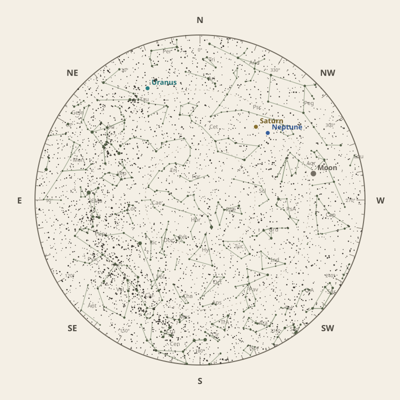

Monthly field almanac
December 2026
Observing reference for Southern Tasmania, Australia.


The month in one sentence · at a glance
Neptune is the clearest planning lead this month.
- New Moon
- 9 Dec Darkest skies
- Full Moon
- 24 Dec Brightest skies
- Best dark window
- 5 Dec 7h 36m
Conditions now
Is the sky likely to cooperate?
Checking the sky near Southern Tasmania, Australia…
Find your bearings
The mid-month sky at 10 pm.
Face the matching compass direction and read outward from the centre toward the horizon.

Night planner
Plan the sky for your date.
Choose an observing date to see astronomical darkness, Moon interference, Galactic Centre visibility and the strongest planets.
Best low-Moon dark periods this month
- 9:14 pm–4:50 am7h 36m · 22% Moon
- 9:15 pm–4:50 am7h 35m · 14% Moon
- 9:16 pm–4:50 am7h 33m · 9% Moon
What deserves attention
Top picks for December.
- Planets
Neptune
Best monthly date at 48° altitude.
- Comets
Comet 11P
41° altitude; magnitude 17.8.
- Meteor showers
Geminids
Peak conditions: 22% Moon illumination; 14° altitude predawn.
- Occultations
HIP 65239 lunar occultation
3:51 am; Moon at 10° altitude for the first listed contact.
- Planetary events
Saturn stationary point
Apparent motion changes direction.


Moon and darkness
Read the lunar month.
Prefer minimum illumination for faint targets; bright lunar observing belongs near the fullest phase.
Complete lunar data →

Milky Way and deep sky
Recommended core sessions.
No recommended Milky Way core session is available this month.
Complete Milky Way data →

Planet visibility
Useful at twilight.
Evening
- Neptune1 Dec · 9:00 pm48° · Excellent
- Saturn2 Dec · 9:00 pm46° · Excellent
Overnight
- Uranus31 Dec · 10:30 pm27° · Good
Predawn
- Mars31 Dec · 5:00 am36° · Good
- Jupiter23 Dec · 5:00 am34° · Good
- Venus31 Dec · 5:00 am21° · Fair
- Mercury3 Dec · 5:00 am2° · Poor
Other opportunities
Events worth noting.
- Comet 11P41° altitude; magnitude 17.8.
- GeminidsPeak conditions: 22% Moon illumination; 14° altitude predawn.
- HIP 65239 lunar occultation3:51 am; Moon at 10° altitude for the first listed contact.


Data and downloads
Need every detail?
2 comet calculations are unavailable; they remain in the data library.
Occultation times use a smooth lunar limb; confirm grazing events with IOTA Occult 4.